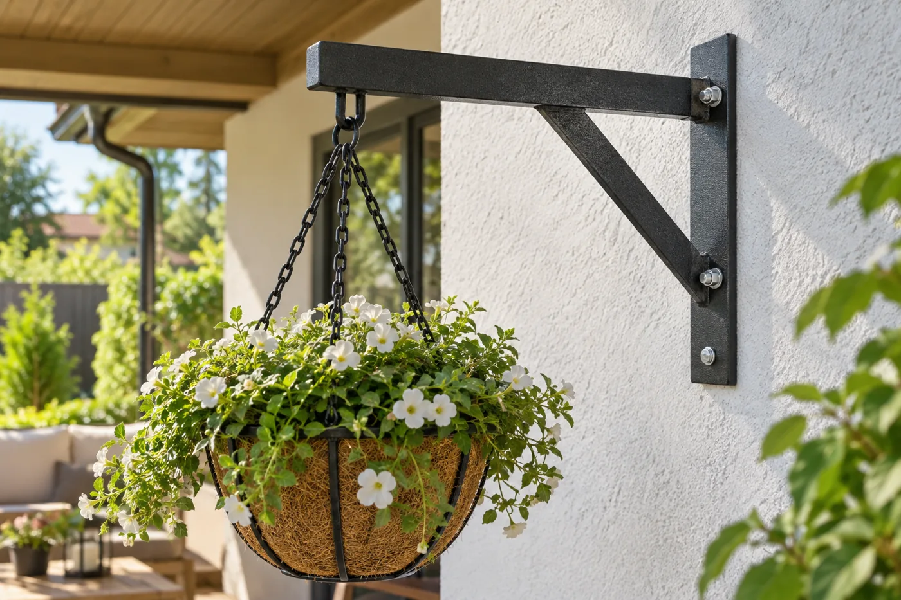
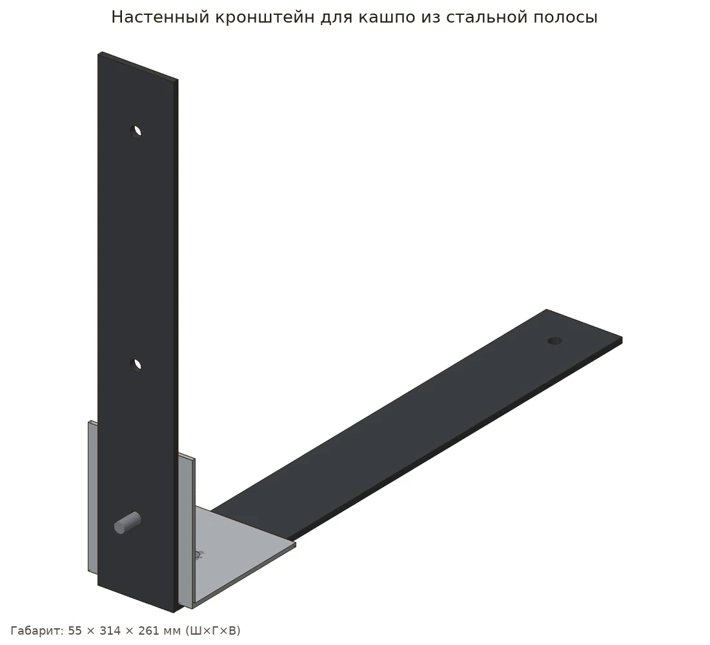
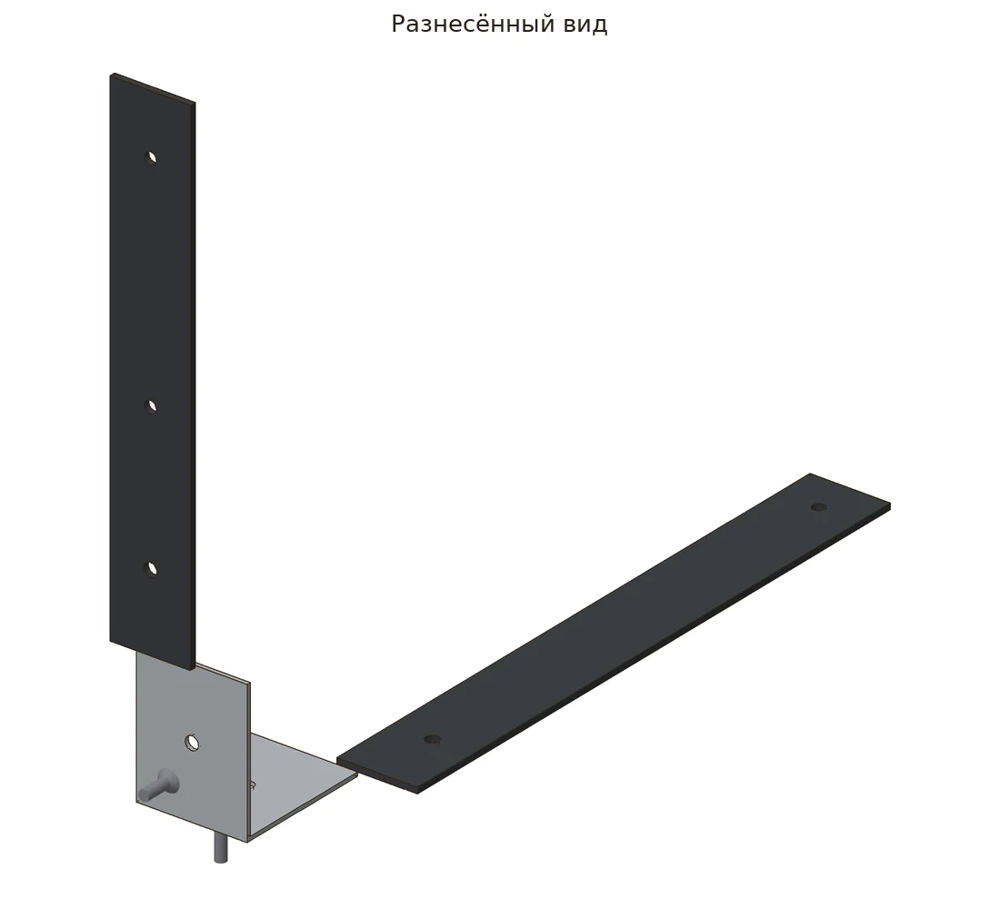
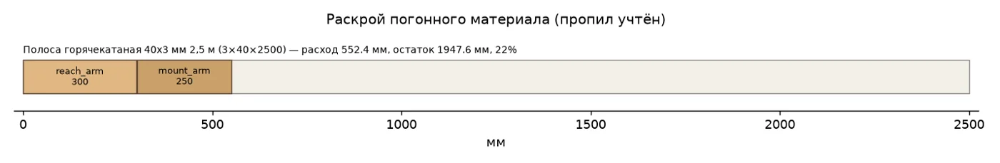
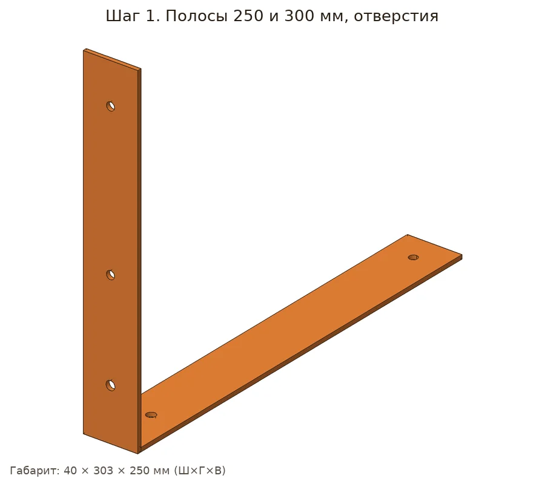
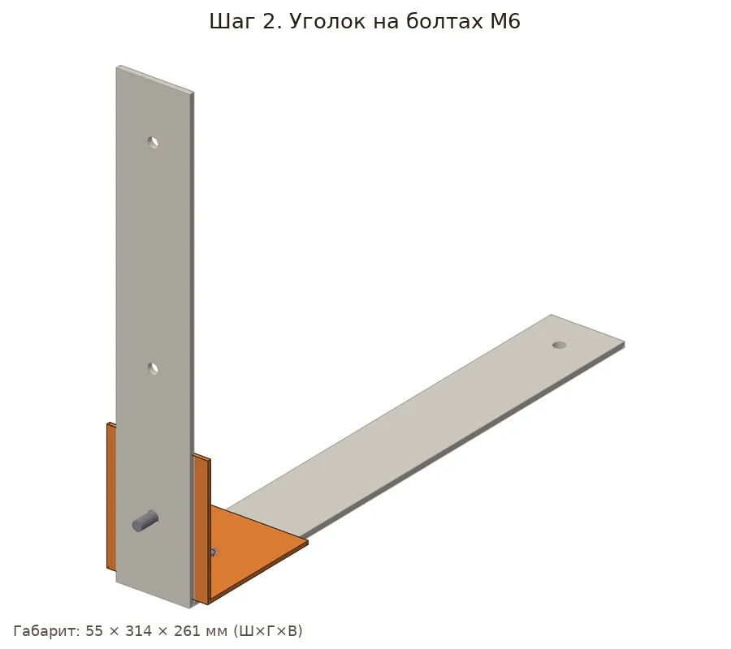
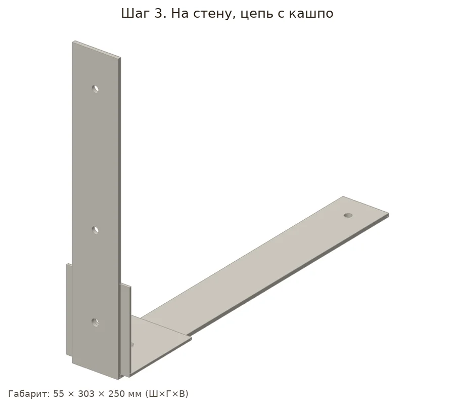

Г-образный кронштейн из полосы 40×3 на уголке и болтах. Держит кашпо на цепи, красится молотковой эмалью.
| Позиция | Зачем | Кол-во | Цена | Сумма |
|---|---|---|---|---|
| материал | ||||
| Полоса стальная 40×3 Полоса горячекатаная 40х3 мм 2,5 м · арт. 1088217 |
раскрой: 1 заготовка по 2500 мм | 1 шт | 404 ₽ | 404 ₽ |
| Цепь оцинкованная Цепь длиннозвенная оцинкованная d3 мм DIN 763 · арт. 128732 |
нужно 0.4 м | 1 пог. м | 81 ₽ | 81 ₽ |
| крепёж | ||||
| Болт оцинкованный M6x16 мм DIN Болт оцинкованный M6x16 мм DIN 933 (7 шт.) · арт. 132300 |
нужно 2 шт. + запас → 2; в упаковке 7 | 1 упак | 40 ₽ | 40 ₽ |
| Гайки М6 Гайка шестигранная оцинкованная М6 DIN 934 (15 шт.) · арт. 101744 |
нужно 2 шт. + запас → 2; в упаковке 15 | 1 упак | 40 ₽ | 40 ₽ |
| Шайбы М6 Шайба оцинкованная 6х12 мм DIN 125А (25 шт.) · арт. 109298 |
нужно 4 шт. + запас → 4; в упаковке 25 | 1 упак | 34 ₽ | 34 ₽ |
| фурнитура | ||||
| Дюбели с шурупами Дюбель универсальный Hard-Fix 6x30 мм нейлон с шурупом (40 шт.) · арт. 687547 |
2 шт. | 1 упак | 236 ₽ | 236 ₽ |
| Карабин Карабин пружинный d4 мм 40 мм DIN 5299 · арт. 128610 |
1 шт. | 1 шт | 40 ₽ | 40 ₽ |
| отделка | ||||
| Эмаль аэрозольная Престиж желт Эмаль аэрозольная Престиж желтая глянцевая 425 мл (01-014-005-004) · арт. 1098190 |
нужно ≈0.036 л | 1 шт | 158 ₽ | 158 ₽ |
| оснастка | ||||
| Сверло по металлу спиральное R Сверло по металлу спиральное Rage by Vira 6,5х101 мм (552079) · арт. 1041688 |
болты (corner_to_mount) | 1 шт | 260 ₽ | 260 ₽ |
| Ключ комбинированный рожково-н Ключ комбинированный рожково-накидной Matrix 10 мм с хромированным покрытием · арт. 687414 |
болты | 1 шт | 103 ₽ | 103 ₽ |
| Сверло по металлу 6 Сверло по металлу спиральное КМ 6х93 мм (966054) · арт. 966054 |
mount_arm | 1 шт | 136 ₽ | 136 ₽ |
| Ножовка по металлу Ножовка по металлу Hesler 300 мм 24 зуб/дюйм средний зуб · арт. 681539 |
резка профиля | 1 шт | 222 ₽ | 222 ₽ |
| Очки защитные Исток открытые с Очки защитные Исток открытые с желтыми линзами (ОЧК014) · арт. 685159 |
металлическая стружка | 1 шт | 112 ₽ | 112 ₽ |
| Рулетка Рулетка с фиксатором 3 м x 16 мм · арт. 159373 |
разметка | 1 шт | 99 ₽ | 99 ₽ |
| Карандаш Карандаш строительный малярный Hesler (2 шт.) · арт. 125418 |
разметка | 1 упак | 30 ₽ | 30 ₽ |
| Итого, включая оснастку 962 ₽ | 1995 ₽ | |||
Источник идеи: https://design-homes.ru/sdelaj-sam/podstavka-dlya-tsvetov. Проект переработан под шуруповёрт 12 В и ручной инструмент.
Параметрическая 3D-модель с настоящими отверстиями, крепёж расставлен по правилам (Eurocode 5, упрощённо для DIY), раскрой с учётом пропила, закупка упаковками. Габарит модели 55×303×250 мм, масса ≈0.66 кг. Прочность не рассчитывалась.






Проверка пройдена: ошибок и предупреждений нет.
| Соединение | Крепёж | Шт. | Заход | Засверловка |
|---|---|---|---|---|
| Уголок крепёжный 70×70×55×2 → Вертикальная полоса (к стене) | M6×16 | 1 | ||
| Уголок крепёжный 70×70×55×2 → Горизонтальный вылет | M6×16 | 1 |
Полоса горячекатаная 40×3: 552.4 мм
Цепь оцинкованная d3: 0.4 м
Болт M6×16: 2 шт
Гайка M6: 2 шт
Шайба M6: 4 шт
Дюбель 6×30 с шурупом: 2 шт
Карабин пружинный d4: 1 шт
Эмаль-аэрозоль: ≈0.04 л
Смета «Что купить в Петровиче» выше посчитана этой же моделью: упаковки, замены и оснастка.